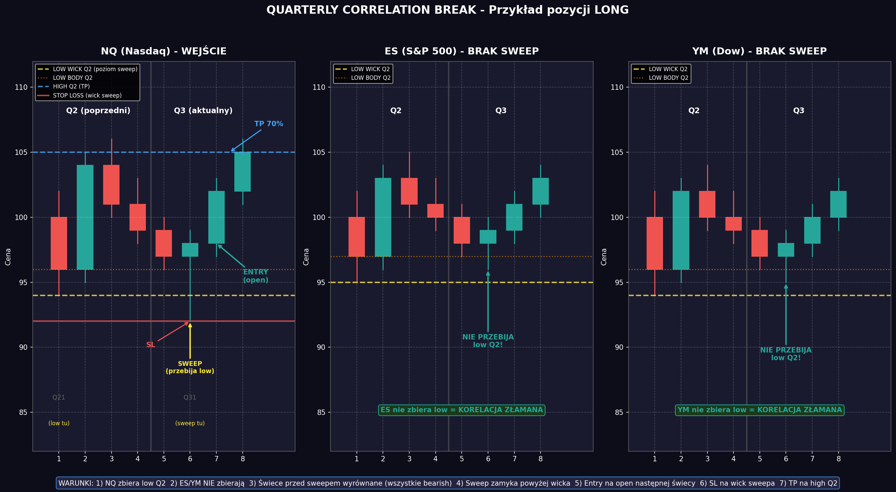

Strategia oparta na zlamaniu korelacji miedzy NQ, ES i YM

18:00 - 24:00
00:00 - 06:00
06:00 - 12:00
12:00 - 18:00
Open nastepnej swiecy po zamknieciu ponad/ponizej wicka
Wick swiecy ktora zrobila sweep (zlamala korelacje)
Przeciwna strona poprzedniego kwartalu (high dla LONG, low dla SHORT)
| Etap | Pozycja | Stop Loss | Akcja |
|---|---|---|---|
| TP1 | 70% | Oryginalny SL | Zamknij 70% pozycji na TP |
| Po TP1 | 30% | Break Even (cena wejscia) | Przesun SL na BE, trzymaj reszte |
Zlamanie korelacji NIE moze wydarzyc sie pomiedzy:
Innymi slowy - nie handlujemy na przejsciach miedzy kwartalami dziennymi.
| Parametr | Wartosc |
|---|---|
| Kapital | $100,000 |
| Ryzyko per trade | $1,000 |
| Ryzyko % | 1% |
| Point Value (NQ) | $20 per punkt |
| Wielkosc pozycji | $1000 / (SL w punktach * $20) |
Dla kazdego instrumentu (NQ1!, ES1!, YM1!) na interwale 15-minutowym:
python quarterly_correlation_strategy.py NQ.csv ES.csv YM.csv
python quarterly_correlation_strategy.py --demo